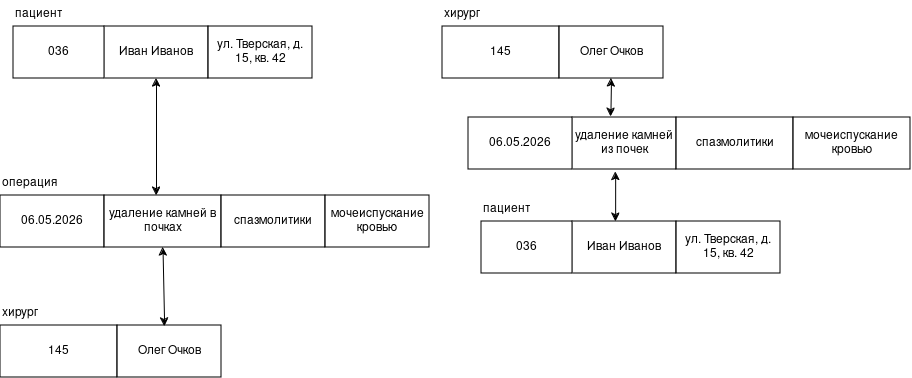

Путешествие в тысячу миль начинается с одного шага (Лао Цзы)
Поздравление с Наступающим 2026 годом читайте здесь.
Я сделала Новогодние кроссворды для сайта Сайт моего друга
Путешествие в тысячу миль начинается с одного шага (Лао Цзы)
Оставляю в прошлом скучную неинтересную локальную файловую систему ради Всемирной паутины.
Новый год иконка от Icons813 января 2026 г.
Доменное имя adeptmushroom github io .
а. АПЕЛЬСИН → САЦЬНВЩЮ
Ключ: +2
б. АБРИКОС → ЫЬЛГЕЙМ
Ключ: -4 (или +28 по модулю 32)
а. ФХНЗКЧ → ШИФРЫ (ключ = +5, значит расшифровка сдвигом -5)
б. ЦЩЕБФ → ТЕСТЫ (ключ = +3, расшифровка сдвигом -3)
Пример для фамилии "ЦАПЛИНА":
Зашифровано: АКЩХТЧК
Вопрос пользователя: Сколько ждать мой заказ?
Найден FAQ-вопрос: Как быстро доставляется заказ? (sim=0.706)
Ответ бот-FAQ: Наш стандартный срок доставки — 3–5 рабочих дней.
показатель точности модели по выдаче кредита: 0.69
принятия решения о возможности заключения страхования КАСКО: 0.9975
Ошибка на обучении (MSE): 0.01797103695019578
Ошибка на обучении (MSE): 0.003941777733567417
Нейросеть — это самообучающаяся система, которая, методом проб и ошибок настраивает связи, чтобы находить сложные закономерности в данных и превращать в осмысленные ответы.
